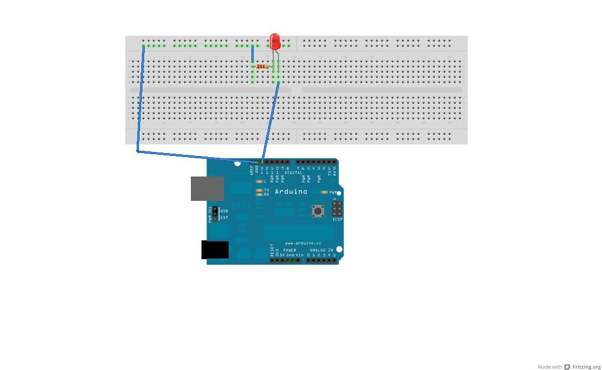
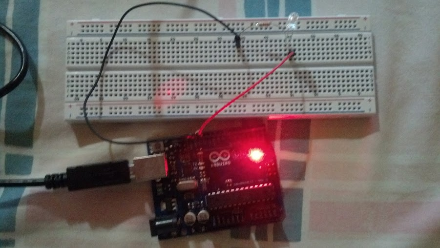
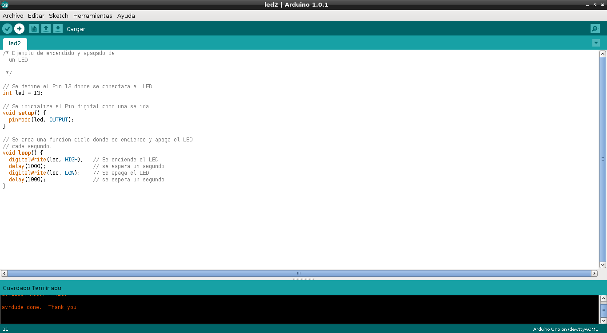

Encender y apagar un LED constantemente con Arduino
Posted on Fri 01 February 2013 in Tutorial Linux • 2 min read
Tenía mucho tiempo sin hacer pruebas en el área de diseño digital o electrónica. A finales del año pasado decidí comprar una placa Arduino y empezar a hacer pruebas. A continuación explico un ejemplo sencillo de encendido y apagado de un Diodo Emisor de Luz (LED).
Arduino es una plataforma de Hardware Libre basada en un microcontrolador y un entorno de Desarrollo que facilita el desarrollo de proyectos de Electrónica.
Como primer ejemplo se conectará un LED en serie con una resistencia de (270 Ohm) y conectado al Arduino.
Los componentes son:
- Resistencia de 270 Ohm (0.5 W).
- Un LED Rojo de 5 mm.
- Una placa Arduino Uno.
Es necesario instalar en Debian el programa fritzing y Arduino IDE:
apt-get install arduino-mk arduino-core arduino fritzing fritzing-data
El esquema de conexión se desarrolló con la herramienta Fritzing. Se muestra en la siguiente figura el esquema:

En la siguiente figura se muestra una foto de la interconexión:

El programa se verifica, se compila y se carga en el Arduino con la herramienta Arduino IDE. La siguiente figura muestra una captura de pantalla de la herramienta Arduino IDE:

A continuación se muestra el código:
/* Ejemplo de encendido y apagado de
un LED
*/
// Se define el Pin 13 donde se conectara el LED
int led = 13;
// Se inicializa el Pin digital como una salida
void setup() {
pinMode(led, OUTPUT);
}
// Se crea una funcion ciclo donde se enciende y apaga el LED
// cada segundo.
void loop() {
digitalWrite(led, HIGH); // Se enciende el LED
delay(1000); // se espera un segundo
digitalWrite(led, LOW); // Se apaga el LED
delay(1000); // se espera un segundo
}
Al cargar el programa el LED empieza a encender y apagarse a intervalos de 1 segundo.
A continuación se muestra un vídeo del encendido y apagado del LED:
¡Haz tu donativo! Si te gustó el artículo puedes realizar un donativo con Bitcoin (BTC) usando la billetera digital de tu preferencia a la siguiente dirección: 17MtNybhdkA9GV3UNS6BTwPcuhjXoPrSzV
O Escaneando el código QR desde la billetera: